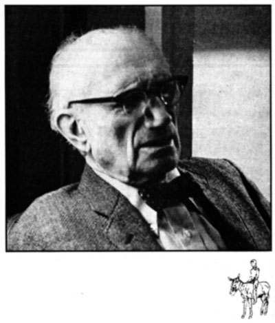
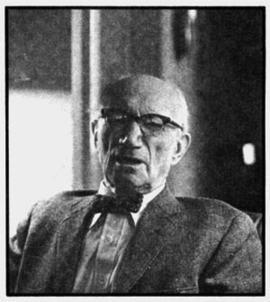
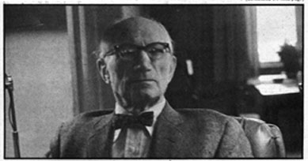

Dr. Ralph Borsodi is such a legendary figure in the back-to-the-land and self-sufficiency movement that many of today's "homesteaders"think he must have lived generations ago.
Not so. Although he did begin pioneering in the modern anti-urban and grow-your-own crusade as early as 1908 (when he himself first moved back to the land), Dr. Borsodi is still hale and hearty and now lives an active life in Exeter, New Hampshire.
This means, of course, that Ralph Borsodi is indeed a legend in his own time . . . and that legend is well-founded. Four hundred years from now-if there is a four hundred years from now-when the political scandals that seem so important today are all forgotten, it's a pretty safe bet that Dr. Borsodi's name will be ranked with those of Plato, John Locke and Thomas Jefferson. For, if the earth is to endure another four centuries, it will only do so because whole societies embrace the less energy-intensive, less urbanized, less industrialized life to which Ralph Borsodi has dedicated every fiber of his being. Dr. Borsodi is chiefly known for his practical and highly successful experiments in self-sufficient living during the 1920's and 30's, and for the books he has written about those experiments. This Ugly Civilization and Flight from the City are, perhaps, his most famous works . . , and they inspired hundreds of thousands of people to follow his example during the Great Depression.
There's far more to this man than a mere longing to "drop out" of an increasingly complex world, however. Unlike so many of today's would-be back-to-the-landers, Dr. Borsodi has spent decades analyzing the ills of modern society and devising remedies for those ailments. He has also sharpened his vision into the future so keenly that, as his followers know he usually seems to be hard at work on a problem at least 20 years before lesser men realize it exists.
In 1943, for example, when most economists and politicians were talking about price controls and our "managed" wartime economy, Ralph Borsodi was warning-in a book with the same title that Inflation Is Coming. It did . . . and it's still with us . . . and it shows no sign of going away.
Of course everyone knows that now, and the business world is being flooded with lectures and meetings and books and pamphlets that discuss the problem in vivid detail. And while all that talk is going on, what has Dr. Borsodi been doing? Only inventing and circulating an inflation-proof currency of his own up there in Exeter, New Hampshire . . . that's all.
MOTHER will be publishing further information about Dr. Borsodi's new currency-the Constant-in her next issue. Right now, though, we'd like you to meet this exceptional man and learn something about his past activities. Carolyn Kimsey visited Dr. Borsodi in his Exeter home over the 1974 New Year holidays and the following interview was taken from her conversations with him at that time.
PLOWBOY: Dr. Borsodi, you've lived a rich and full life and your many achievements have been copiously documented by the press . . . yet, in at least one important area, you appear to be a man' of mystery: No one seems to know just how old you are.
BORSODI: No, well I don't know myself. I think I was born in either 1886 or '87. The only documented evidence of age I have is my passport, which shows me to be 88 . . . upon the testimony of my older brother.
PLOWBOY: I understand you were born in New York City and grew up there, but that you were educated by your parents rather than enrolled in the city's public school system.
BORSODI: Well, my parents took me to Europe when I was four or five and I lived there several years under their tutelage. I remember, though-and you're asking me to recall things that took place a long time ago-that I did go to school in New York for at least a few months when we returned from Europe. I attended public school for just a short time, and I went to private schools from then on.
PLOWBOY: Is that where you got your training in economics?
BORSODI : No . . . well, let me explain something about my educational history before I answer that. Curiously enough, you see although I've been sporting both a Master of Arts and a doctorate in recent years-I've never had a Bachelor of Arts degree . . . which, of course, is supposed to come first. I did a lot of studying in my youth, but my formal education was very sketchy. I was introduced to economics by working for my father, who was a publisher and who had connections in the field of advertising. That was my first job-I was just a boy-and it opened my eyes in many ways. It was while I was there, too, that I became interested in the idea of homesteading. My father wrote the introduction to A Little Land and a Living. This was a book about farming for self-sufficiency written by Bolton Hall. He was a very distinguished author and the book played an important part in the back-to-the-land movement that took place during the banking panic of 1907. Now I'd been raised in the city and in these private schools and this was the first time I was at all conscious of the fact that there was another way of living. My father had some land in Texas then and, compared to today, the state was a brand new country at that time. So, with an equally new awareness of what life could be, I moved out there in 1908 and began to spread my wings a little.
PLOWBOY: That must have been when you started to develop your theories about decentralist patterns of life.
BORSODI: Well I guess it began about then . . . but I didn't really become conscious of the question of patterns of living until much later. I had come back to New York, you see, and I had a wife and two sons and I was working as an economic consultant for Macys and some other marketing firms. Then, in 1920, there was a great housing shortage in the city and the home we were living in was sold right out from under us. So we left. I moved my family out of New York in 1920 in a deliberate effort to get away from urbanism.
PLOWBOY: You were launched upon your whole life's course, then, by a housing shortage.
BORSODI: Yes, yes . . . but I also left the past behind for another very good reason. My first wife was raised on a farm in Kansas and I knew that I could draw on her experience. With my wife's help I would be able to do things in the country that my city background would have made it extremely difficult for me to do alone. My theory was that it was possible to live more comfortably in the country than in the city. We wanted to experiment with building and making things for ourselves . . . to have some security independent of the fluctuations of the business world.
PLOWBOY: You were trying to become self-sufficient?
BORSODI: Yes, we put almost all our savings into the down payment on a little place-we called it Seven acres-in Rockland County, an hour and three-quarters from New York City. I continued to work in the city and we made monthly payments out of my salary while we rebuilt an old barn on the property into a house. By the end of the second year we had a very comfortable and modern homestead.
PLOWBOY: And you were relishing this comfort when others were becoming desperate! I think you've written about that time in these words: " . . . in the depression of 1921 , when millions were tramping the streets of our cities looking for work, we began to enjoy the feeling of plenty which the city dweller never experiences". You were, of course, referring in part to the fact that you had plenty of eggs, meat, milk, fruit and vegetables to eat while many others had none.
BORSODI: Yes.
PLOWBOY: Your experiment, then, was an immediate success.
BORSODI: It was. So much so that we soon outgrew our first homestead. In 1924 we bought 18 acres-which we named Dogwoods after the beautiful trees on the land-and developed it into an even more satisfying place to live. I built quite a formidable home and three other buildings there from the natural rocks we found on the property.
PLOWBOY: Did you do all that work yourself?
BORSODI: Oh no, that would have been impossible. After all, the main building was three stories high and 110 feet long and I was still busy in the city at the time. I had contractors do some of the work on the big house. But I also did a lot on that structure myself particularly on the interior-and I did even more on the other houses we put up. We were using a modification of Ernest Flagg's method of building with stone, you know.
PLOWBOY: How did you acquire the necessary construction skills? Did you learn by doing?
BORSODI: That's right. Practice and reading and observation . . . one of the best of all ways of getting an education. We've forgotten, you see, that at one time most people obtained their training by apprenticeship. Even doctors and lawyers, before we had medical and law schools, learned those professions as an apprentice to an already established M.D. or attorney.
PLOWBOY: Well I must say that you certainly used your "learn by doing" philosophy to good advantage. Not only did you teach yourself-with or without the help of others-to build stone houses but, in the course of turning Dogwoods into a self-sufficient homestead, you learned to milk a cow, shear sheep, plow, churn butter, operate a millstone, weave on a loom and do many other things. You even documented all this activity in one of your books . . . a book that you typeset yourself in the basement of the Dogwoods house.
BORSODI: Yes, well I didn't particularly do that to prove a point or anything. It's just that I found the book a difficult one to write . . . so difficult that I finally put a linotype machine in my basement and set the copy myself as I wrote it.
PLOWBOY: While we're talking about your books, I'd like to mention This Ugly Civilization. It was published, I believe, in 1928 and also contained a great deal of information about your experiences at Seven acres and Dogwoods. The book was so inspirational, in fact, that the Council of Social Agencies in Dayton, Ohio used it as a guide in setting up a self-help program for the unemployed of that city during the depression.
BORSODI: Yes, that's right.
PLOWBOY: I understand that you eventually became involved with the project.
BORSODI: In 1932 the people who had started that program -and they were some of the most distinguished people in Dayton-came to Dogwoods and invited me to come and see what they were doing. It was a very interesting program but they were having trouble raising the money they needed. After all, one-third of Dayton's working force was unemployed during the depression . . . you can imagine what the conditions were like. So I told the Council, "I know Harry Hopkins, who is Franklin D. Roosevelt's right-hand man, and I think I can get some money from Washington."
PLOWBOY: So you went to Washington and . . .
BORSODI: So I went there and I did get $50,000 and it was the biggest mistake I ever made in my life. I brought back the money all right . . . but with it came the federal bureaucracy. Harry Ickes, the Secretary of the Interior, federalized the project in the spring of '34. From then on it was just agony trying to accomplish anything on the Dayton project. I finally got fed up with it all and decided to try to start a movement non-federally sponsored movement-that would get people out of the cities and into the pattern of life which I call "homesteading".
PLOWBOY: I think I should point out for our readers that when you speak of "homesteading", you're actually talking about the founding of self-sufficient communities . . . rather than splendidly isolated little farms.
BORSODI: Yes. I'm certainly not an advocate of what happened almost only in the United States . . . and almost entirely only in the U.S. Mid and Far West. When that part of our country was settled, see, it was done under the original Homestead Act. This legislation allowed you to locate on 160 acres --a quarter section of land -and gain title to the property merely by sticking it out and living there for four years. So what this did, of course, was to, sprinkle our West with literally millions of people living on isolated homesteads. And back in those days, when you only had horses with which to travel, you might not see your neighbors for days. You went to town probably once a week if you went that often. Now this kind of living is just as unnatural as packing people like sardines into the boxes of New York City. Man is a gregarious animal. He's not supposed to live in isolation. He should actually live in a community, but a community does not necessarily have to be a city. There's all the evidence in the world that the building of cities is one of the worst mistakes that mankind has ever made: For both physical and mental health we've got to be close to Mother Earth.
PLOWBOY: So where does that leave us?
BORSODI: The normal way to live-and I've discussed this endlessly in my books-is in a community of what I call "optimum size". Not too large and not too small. A place where, when you walk down the road, everyone says, "Good morning" . . . because everyone knows you.
PLOWBOY: And that's the kind of community you decided to establish after you left Dayton.
BORSODI: Yes, and I immediately saw that the center of such a community should be a school where everyone-not just the children could study the most enormously important subject of all: the philosophy of living. I think that philosophy, as it's taught in the academic world, is a completely meaningless discipline. Philosophy as a way of living, on the other hand, is just enormously important. Abraham Lincoln once said that the future of America depends upon teaching people how to make a good living from a small piece of land. Now this is the technology we must study . . . how to make a good living-not just a Spartan existence, but a good living-on a small piece of land.
PLOWBOY: I suppose you began your new community, then, with one of these schools.
BORSODI: Yes. I established a School of Living back in Rockland County, New York during the winter of 1934-'35. Before long about 20 families began coming out regularly from New York City to spend the weekends at this school. How they scraped up the money to get there I don't know. It was the middle of the depression, you see, and some of these people didn't have any source of income. I remember when we got ready to commence building our first community. I told them, "I'll begin if there are enough of you who will put up a little money with which to start." Do you know how much those 20 families could raise? Two hundred dollars. The whole batch of them. They laid the money on the table and I gave them receipts for it and that's all there was. It was up to me to go out and find a way to buy the land we needed.
PLOWBOY: How did you do it?
BORSODI: Well I had a tract I wanted to use . . , about 40 acres I'd spotted near Suffern. It belonged to a Jewish delicatessen owner in New York City, a man by the name of Plotkin. I went to him and I said, "Mr. Plotkin, you've got 40 acres of land and you know that now, during the depression, it's almost worthless . . . and it'll be years and years before you can begin to get back what you've put into that property. Now I haven't got any money, but I'll sign a contract for your 40 acres . . . a contract that binds me to pay you for one-fortieth, or whatever part of the land I'm using, every time I build a house on it. And each time 1 start a new building, I'll go to the bank and raise enough to start construction and to pay yon for that section of the property." After dozens at talks with Mr. Plotkin and his family, I got them to agree
PLOWBOY: And this was the start of . . .
BORSODI: Of the Bayard Lane community. I should mention, too, that Mr. Plotkin kept five acres of land for himself and joined the experiment. He and his wife, in fact, were still farming there when I paid Bayard Lane an "anniversary visit" in 1973. So the idea worked out well for them.
PLOWBOY: Did all 20 of your original families also join''
BORSODI: No, only 16. And as I've mentioned, they didn't have much ready cash. So I said to them, "The lots here should cost you a little less than $1,000 but you're not going to have to buy those lots. All you'll have to scrape up is rent, including taxes, of about $5.00 a month. Then I started raising money, mostly by issuing certificates of indebtedness which could be paid off with those rent installments. What I had done, you see, was create a land trust . . . really an economic, banking and credit institution. We called it the Independence Foundation, Inc. It was a new and ethical way of holding land in trust . . . of making low-cost, cooperatively shared credit available to people who wanted to build homesteads in our community. This institution made it possible to provide people access to land without their having to pay cash for the property in the beginning.
PLOWBOY: Great! But how did you then finance the construction of homes'?
BORSODI: Well most of the families who joined Bayard Dane were unemployed, but a few did have jobs or a little money. So we just put the first group to building houses and raising gardens and doing other productive work, and the second furnished enough cash to cover the basic expenses. We followed pretty much this same course of action a little later, when we started Van Houten Fields . . . a second School of Living project in the Suffern, New York area.
PLOWBOY: What happened to these communities . . . and were others built?
BORSODI: The two communities, of course, are still there. They've changed somewhat over the years-only a few families still raise the big gardens-but they're still there. As for others . . . well, World War II with its priorities made building materials impossible to get. It also put so much fresh money into people's pockets that no one much wanted to think about self-sufficient homesteads for the next 20 years. What with one thing and another, I gave up the Independence Foundation during the war and Mildred Loomis took the School of Living to Ohio. She continued to operate it there with her husband, John, until his death in 1968. Mildred then moved the school to Freeland, Maryland where it's still teaching today's back-to-the-land people the basics of doing for themselves.
PLOWBOY: Dr. Borsodi, if the mail we receive at THE Mother Earth News is any indication, there are now hundreds of thousands-probably millions-of people in this country who feel that today's urbanized and industrialized society just doesn't work anymore . . . that the so-called "system" no longer satisfies basic human wants, needs and desires.
BORSODI: Well, the dissatisfaction with "modern" society in this country that you talk about is nothing new. We've had it again and again, especially during and after great depressions, since the nation was founded. The unrest usually spawns a "back to the land" movement that catches fire for a while . . . and then times get better and we repeat the cycle all over again.
PLOWBOY: Why?
BORSODI: Why? Because the whole Industrial Age-which began roughly 200 years ago when Adam Smith wrote The Wealth of Nations-is based on false premises. Smith, you see, eulogized the factory system of production as the way to end want in the world. He pointed out that if you make things on a large scale in a factory, you reduce the cost of producing those items . . . and this is perfectly true. But Adam Smith completely overlooked what factory production does to distribution costs. It pushes them up. Goods cannot be manufactured in a factory unless raw materials and fuel and workers and everything else are brought there. This is a distribution cost. And then, after you've put together whatever you're making in that plant, you've got to ship it out to the people who consume it. That can become expensive too. Now I've produced everything from tomato crops to suits of clothing which I've hand spun on my own homestead and I've kept very careful records of every expense that went into these experiments. And I think the evidence is pretty clear that probably half to two-thirds-and it's nearer two-thirds-of all the things we need for a good living can be produced most economically on a small scale . . . either in your own home or in the community where you live. The studies I made at Dogwoods-the "experiments in domestic production"-show conclusively that we have been misled by the doctrine of the division of labor. Of course there are some things-from my standpoint, a few things-that cannot be economically produced in a small community. You can't make electric wire or light bulbs, for example, very satisfactorily on a limited scale. Still virtually two thirds of all the things we consume are better off produced on a community basis.
PLOWBOY: What about quality?
BORSODI: Well, when you make things for your own use you try to produce the best you can. And when people produce items that are traded face to face, there's a certain human relationship and a pride of craftsmanship that keeps the quality high. But when you just set up machines and run them solely for the purpose of making a profit, you usually begin to exploit the consumer. That's what's happening right now and it's one of the reasons so many people feel cheated by our industrialized system.
PLOWBOY: But still the emphasis on factory production goes on.
BORSODI: Oh yes. They even apply it to farming now. They call it agribusiness. I see it right here in New Hampshire with the dairy farms. The School of Agriculture at the University of New Hampshire and other "experts" teach the little farmers that it doesn't pay them to have a cow or two to produce their own milk. And this is just not true. Let me call your attention to some curious facts about a cow: In the first place, to estimate the value of such an animal, the average person would say, "Well, let's figure out what its milk is worth." Now you can put a dollar value on that milk, but you can't put just a dollar value on it. Because, when you produce your own, it's pure and fresh milk . . . unlike the bottled variety which is all processed and pasteurized and treated and, in my opinion, inferior. So you have the milk. But that cow also produces manure and, if you have enough manure, you don't need to buy any chemical fertilizer. Also, you've got to consider the value of the calf which that cow has each year. By the time you add up all the income a farmer can realize from a cow, you'll see that the return on his investment is quite substantial . . . provided that he and his family use the milk. If, on the other hand, the farmer sells the milk at wholesale prices to someone else, then he gets only a little return for it which he must spend at retail prices for the things he wants. The milk is worth the most to him, in other words, when he uses it. This is an example of the economic law that I discussed in my book, The Distribution Age. It has to do with distribution costs. When you buy milk, you pay very little for the milk itself. Most of what you pay is for the distributing of the product. When you produce your own milk, however-or your own vegetables-you don't have such costs. This is the story which should be told in the schools of agriculture . . . instead of the miseducation that those institutions teach.
PLOWBOY: So. You say that-even though we've become dissatisfied time and again in this country with our increasingly industrialized society . . . and even though this dissatisfaction has repeatedly produced back to the land movements-nothing has yet reversed our nation's trend to the pre-packaged, energy-intensive, dehumanized existence . . . at least partly because our institutions teach people to value an industrialized over an agrarian society.
BORSODI: As long as the universities-particularly the schools of agriculture-extol the values of urbanism and industrialism, it's like trying to roll a stone uphill whenever you attempt to show people the virtues of the more nearly self-sufficient life. Every generation, you see, is taught to think of homesteading as something that is past and romantic and best forgotten. So the real battle is not in finding individuals who've got the hardihood, the stamina and the ingenuity to make it on their own . . . but in getting the educational establishment interested in showing these people how to go about it.
PLOWBOY: Is it just the educational establishment that's at fault?
BORSODI: Well you must remember that we're educated-our tastes and ideas are determined-by far more than just schools and universities. The church used to teach us how to live, but the church has lost its influence. Schools then stepped into the breach and-as I've said-now often deal in misinformation but, as a matter of fact, it's no longer the schools that teach the American people what they want. We now have an even more persuasive educational institution ramming the goods that factories produce down the throats of our people . . . and that educational institution is called advertising. Now very few individuals think of advertising as the real educator of the American populace, but, over and over again, it teaches us to want all sorts of things which are not good for us . . . but which make money for those who control the factories. The heart of economics, you see, is the satisfaction of wants. So it's just good business to create a want that only your factory can satisfy. But nature doesn't have factories, so it's obvious that the creation of such a demand is probably unnatural . . . wrong. And when you encourage people to want the wrong things, you're really creating a pattern of life-a way of living-that you shouldn't.
PLOWBOY: Still, despite your arguments with industry, you're not what anyone could call "anti-technology".
BORSODI: Oh no. I'm very interested in one kind of technology: the technology of decentralization and self-sufficiency and good living. Unfortunately, most of the rest of the modern world is concerned with the technology of centralization and mass production and money. Mostly money.
Do you know what the word "economics" really means? It comes from the Greek word oeconomia or housekeeping. The Greeks insisted that every recognized citizen had to have a homestead-or estate, as they called it-and the workers to support him so he could devote his time to public works and the defense of the state. So oeconomia was the study, the scientific study, of how to conduct a household. It had nothing to do with making money. The Greeks had another word for that . . . c hrematistikes. Chrematistikes meant "moneymaking" and they despised that. To make a living-a good life-was the work of a gentleman . . . to try to make money was the work of a menial who was looked down upon. We've turned this completely around. There are two kinds of income, see. There's what I call non monetary-or imputed-income, and monetary income. On a homestead most of your income is imputed. You produce wealth in the form of goods and services but you don't get paid for it. Cook a meal at home and you're doing exactly what you'd do if you were hired to cook it for a restaurant . . . but in the one case you're producing imputed income and in the other, monetary income. And it's only the latter our world is interested in these days.
PLOWBOY: I believe you make a similar distinction when it comes to the ownership of property.
BORSODI: I very carefully divide the possessions of mankind into two categories: one I call "property" and the other "trusterty". Now property, by definition, is anything which can be owned . . . legally owned. But you know there are some things that can be legally-but not morally-owned. For instance, slaves used to be legally owned. The statutes of our states and the Constitution of the United States made it legal to own human beings . . . but no amount of legalizing made it moral. I feel the same way about the natural resources of the earth. When you make something with your own labor you have, so to speak, frozen your labor into that thing. This is the way in which you create a moral title to that thing, by producing it. You can sell it to somebody else and, in return for what he pays you, you can give him your moral title to whatever it is. But no man created the earth or its natural resources. And no man or government has a moral title to the earth's ownership. If it is to be used, and we have to use it in order to live, then it has to be treated as a trust. We have to hold the earth in trust. We can enjoy the fruit of the land or of a natural resource, but the land or the resource itself must be treated as a gift. A man who uses the land is a trustee of that land and he must take care of it so that future generations will find it just as good, just as rich, as when he took possession of it. A trustee is entitled to a return for administering his trust . . . but he must never destroy the trust itself. The moment you lay down this simple moral principle, of course, you make ducks and drakes of our existing method of treating the natural resources of the earth. The history of America is just one gigantic land exploitation . . . and very few people realize that this creates exactly the conditions which make individuals-in desperation-turn to socialism and communism. So long as land is available as the ultimate resource to which you can turn to support yourself, nobody can exploit you. It's only when all the land is expropriated by speculators or by people who are living on it that it's impossible to turn to the earth as the ultimate source of employment. Not everyone has to be a farmer, of course, but so long as land is available to those who want to work it we'll have none of the desperate unemployment that finally led Marx to propose communism as the solution to the problems that capitalism has created.
PLOWBOY: Then you would say that preserving the land and holding it in trust for the use of everyone, including generations yet unborn, is the only morally correct course of action . . . from the standpoint of both the earth and mankind.
BORSODI: Of course.
PLOWBOY: But we've never done that in this country. As a matter of fact, few-if any-cultures have.
BORSODI: No. Well, let me put it this way: The only worthwhile histories that have ever been written have been histories of civilizations. Histories of single nations are what Napoleon called a "lie agreed upon". National histories just aggrandize the story of a country. Histories of civilizations, though, are something different. Toynbee, you know, has written an account of 21 civilizations . . . and the interesting point about them is that every one of them died. As Toynbee explained it-and he does in historical terms-they were challenged by some problem, some crisis. Toynbee called these confrontations "times of troubles" . . . and if the civilization wasn't equal to the challenge, the whole thing simply collapsed. Now this is what we face. Have you ever heard of Spengler and his big book, The Decline of the West? Well it made a tremendous sensation when it appeared, because he predicted exactly what is taking place today. Spengler's thesis is that what every civilization seems to do is to pile up all the wealth and all the health in big cities . . . where they finally decay. And then there's a collapse and an overwhelming population decline and the people who are left are forced back to the land. Now it seems tragic to me that we do not listen to men like Toynbee and Spengler. They've shown us what can happen. We now know . . . and, instead of waiting for a crash to drive us to a better way of living, we should use all the wits we've got--all the technology we've got-to develop that sort of living before the coming collapse takes place.
PLOWBOY: Is such a catastrophe inevitable?
BORSODI: Well if we, as a culture, were thoughtful about it and asked ourselves what kind of civilization we needed to develop to accomplish these ends, we might ensure a good living for all our citizens and organize ourselves so that no calamity could take place. But we haven't done that. We haven't done that at all. We're on a collision course with destiny and the crash that's coming is going to make the last depression look like a joke.
PLOWBOY: Is there no hope at all of warding off the seemingly inevitable?
BORSODI: Well . . . maybe. Just maybe. The warning flags are up all around us. The energy crisis, you see, is interesting to me for this very reason. Because, for the first time, the public is getting a faint glimmer of the fact that we're living in the twilight of industrialism. The crunch is beginning. In another 20, 30 or 40 years all the oil will be gone at the rate we're using it. And that's not all, of course. There are other shortages. Nearly all the industries are experiencing shortages of minerals and materials. See, this is another point that Adam Smith completely overlooked when he wrote The Wealth of Nations: The factory system can only last as long as our irreplaceable resources are cheap and available. Well, those resources are never going to be cheap again and they're going to become increasingly unavailable. We're living in the twilight of industrialism and urbanism.
PLOWBOY: I think that many of MOTHER's readers agree with you, but what can we do about it?
BORSODI: We must develop what a friend of mine calls a "biotechnology "-a life technology-to replace the inorganic technology that we've built. Instead of continuing to plunder our irreplaceable resources-which we won't be able to plunder much longer anyway-we must begin to explore the use of replaceable resources. Consider energy, for example. The oil is running out. Even the coal, which we still have a lot of, won't last forever. But the wind! You can use the wind to drive a motor and produce power and you can do so as much as you want. It doesn't lessen the quantity of wind in the world a particle and it doesn't pollute anything. We ought to have literally thousands of windmills all over this country. There's a whole new technology-in which we use wind, water and the sun-to be developed. All the money, all the research, now being put into an attempt to keep our existing inorganic technology alive is a colossal mistake.
PLOWBOY: Again, I'm sure that many of our readers agree with you. An increasing number of them, as you know, are already building biotechnic ways of living on an individual basis. They're setting up homesteads that are largely self-sufficient, supplying their energy requirements with wind plants and solar collectors, and otherwise trying to build satisfying life patterns that will allow the planet to endure.
BORSODI : Yes, of course and those who are wise enough to build these little islands of security will-to a large extent-be able to withstand the horrors that lie ahead. But this may well be too little and too late. It may not be enough, you see, for a few hundred thousand-or even a few million people to make this effort. I'm afraid we're going to have to change our society from top to bottom, and quite rapidly, if we're going to have a meaningful impact. Your magazine, THE Mother Earth News, prints marvelous articles about alternative energy sources and composting and so on. But that's not enough. You're just one small periodical. It's perfectly ludicrous that you should be trying so desperately to publish information that should be taught in every school in this country. See. I started the School of Living and you print a magazine, but it's not enough! Somehow, if we're really going to change the country-and do it in time-we've got to get the universities to teach the truth about this. The teachers in the colleges and universities have got the leverage we need. I've studied history . . . the history of social movements. And this thing we're engaged in is a social movement. Now there's only one way of getting something like this accepted: institutionalize it in your educational establishment. Get the churches and the schools and the advertising industry, if you must have one, to make it the prevailing doctrine of your culture. Then you've got to start putting together the necessary support system . . . and let me illustrate what I mean by that. The automobile. I bought my first automobile in 1908 when I was in Texas. At that time there were no garages and you had to find your own machine shop or actually be a machinist if you had repairs to make. Or you had to send your vehicle to the factory. The roads weren't very good back then, either, and I had to buy gasoline at every country store I passed. There were no gas pumps or garages or anything that motorists take for granted nowadays. Today's low-slung automobiles, with their complicated parts and electronic ignitions wouldn't have lasted very long in 1908. Even if a few people had gotten together to design and build their own "vehicle of the future" back then and even if it had turned out to be exactly like a 1974 automobile, it wouldn't have had much impact. Not many individuals would have found it practical to operate such a car. The kind of roads it would have needed-the support systems-weren't available. Now that's the situation we face today. It's not enough for a few of us to build our own windmills and solar-heated houses. We've got to come up with a technology that can keep equipment like this working for millions upon millions of people. We've got to develop the necessary support systems.
PLOWBOY: That sounds like a big job.
BORSODI: It is a big job. It involves changing every social and economic institution in the country. Many of the ills that bedevil mankind and the planet today, you know, stem from a statute passed by the New York State Legislature in 1811. That law, for the first time, authorized the formation of corporations for private profit. Up until then you could only organize a corporation for public, or quasi-public, purposes: The construction of a toll road or a bridge or something of that nature.In 1811, however, the New York statute granted corporations the status of artificial persons . . . with special privileges denied to natural people. And that was the start of the tremendous corporate exploitation from which we now suffer. There's a difference between classical capitalism and corporate capitalism, you see. If that 1811 statute hadn't been passed, we would live in a totally different world today.
PLOWBOY: So you'd change that law.
BORSODI: Well you can't have a free economy once you've given virtually endless special privileges to various corporations. I would abolish those privileges. I would also introduce a rational system of land tenure and a rational system of money . . . money that couldn't be inflated at the whim of politicians.
PLOWBOY: And you'd establish Schools of Living in every community.
BORSODI: You'd have to if you expected to decentralize society and make people self-sufficient. Living in the country, you know, has been called "the simple life". This is not true. It's much more complex than city life. City life is the one that's simple. You get a job and earn money and you go to a store and buy what you want and can afford. The decentralist life in the country, on the other hand, is something else again. When you design your own things and make plans about what you're going to produce and really live in a self-sufficient manner, you've got to learn . . . you've got to master all sorts of crafts and activities that people in the city know nothing about. But there's more than just solving the how-to problems. I've often said that if we're going to have a real rural renaissance I'd just take the solving of the how-to problems for granted. The first thing I d provide would be festivals.
PLOWBOY: Festivals?
BORSODI : If you study the lives of peasants and farmers the world over, you'll find that their seasons the year around have been a series of celebrations. Even when they were shamefully exploited by the nobility-as in the Middle Ages-they always had their festivals. Sometimes 150 a year. They always had. in other words, a satisfying and challenging cultural life. Active participation in such activities is, to a large extent, denied an individual in our society. We're supposed to get our culture in the form of We-packaged entertainment and distractions . . . secondhand, at that, from one media or another. That's why we introduced singing and music and folk dancing in our School of Living back in the 30's. We want bread and we want good bread . . . but man doesn't live by bread alone. Don't underestimate that fact. We've got to develop a way of living that is practical and successful. But it's got to be satisfactory in a cultural sense too. All work and nothing but work makes Jack a dull buy.
PLOWBOY: Dr. Borsodi, thank YOU.
BORSODI: And thank you.
Copyright © 2001-2002, Ogden Publications, Inc.
All rights reserved.
|
 |
 |
 |